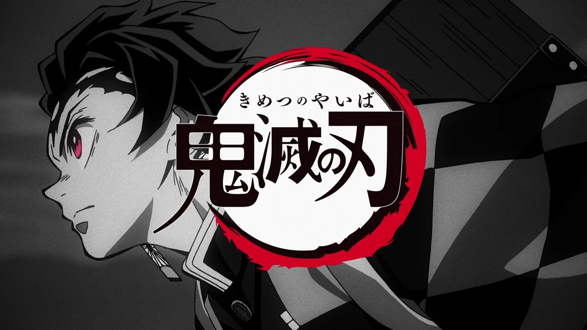
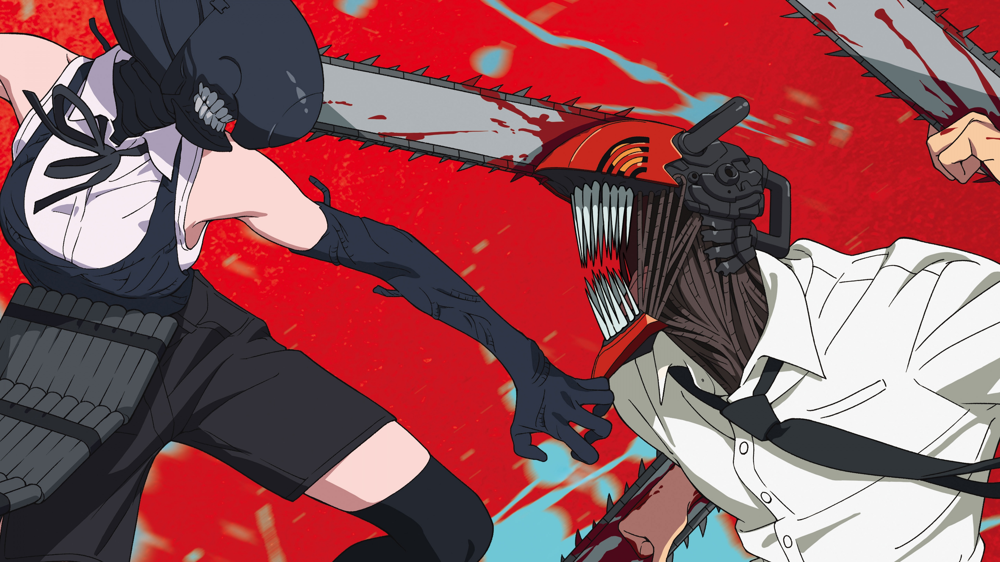

Bungo Stray Dogs WAN Season 2 Reveals Main Visual, July 2026 Release
Bungo Stray Dogs WAN 2 (Season 2) spin-ff anime revealed the main visual, along with a July 2026 release date.
Reveals Studio BONES is again working together with studio NOMAD on the animation production.
Bungo Stray Dogs (Literary Stray Dogs) is a manga series written by Kafka Asagiri and Sango Harukawa. It has been
serialized in Kadokawa’s Young Ace magazine since 2012. The series has multiple light novels, manga spin-offs,
and live-action stage plays. Bungo Stray Dogs WAN is an ongoing spin-off written and illustrated by Neco Kanai. It is
serialized in Young Ace UP.
Studio BONES is handling the animation of the main series, which caught up to the manga after the latest season.
Season 5 ended with Episode 11, but a continuation was already teased after the finale.
The anime was voted 2023 Anime of the Year.

Demon Slayer: Infinity Castle Film Announces Blu-ray & DVD Release for July 29
The first installment of Demon Slayer: Kimetsu no Yaiba – Infinity Castle has confirmed its Blu-ray and DVD release for
July 29, 2026 in Japan, with pre-orders opening on April 18 (JST). The release will be available in both limited and standard
editions. The limited version is priced at ¥11,000 (~$70 USD) for Blu-ray and ¥9,900 (~$63 USD) for DVD, while the standard edition
will retail for ¥4,950 (~$32 USD) and ¥4,400 (~$28 USD) respectively.
The limited edition includes newly illustrated packaging by character designer and chief animation director Akira Matsushima,
featuring Tanjiro Kamado and Giyu Tomioka on the storage box and multiple battle scenes on the digipak, alongside bonus materials
such as a two-disc soundtrack, a special features disc, and booklets. A stage greeting screening event has also been announced, with
entry available via serial codes included in select pre-orders.
The anime premiered in Japan on July 18, 2025 and then went on a record-breaking run, earning over 25 billion yen
(approximately 174 million USD) in the first 31 days.
Following its domestic debut, it launched internationally on August 14, hitting North American theaters on September 12 and
breaking even more records. It film expanded to SCREENX and ULTRA 4DX screenings in Japan starting on February 20.
This marked the franchise’s first entry into multi-screen and immersive 4DX formats.

Crunchyroll to Stream Chainsaw Man: Reze Arc Movie Starting April 30
Chainsaw Man – The Movie: Reze Arc is officially coming to Crunchyroll on April 30, starting the platform’s 2026 Ani-May celebration.
The film premiered in 2025, winning the title of the Anime Movie of the Year at our 6th yearly awards. Chainsaw Man International Assassins
Arc anime is currently in production..
The first anime season premiered last fall, and it ran for a total of 12 episodes. MAPPA CEO Manabu Otsuka said that the Chainsaw Man anime
was a complete financial success. Kenshi Yonezu performed the opening theme song “KICK BACK,” while each episode had a different ending theme song
performed by a different artist.
Crunchyroll is streaming the anime, and they describe the story:
Denji is a teenage boy living with a Chainsaw Devil named Pochita. Due to the debt his father left behind, he has been living a
rock-bottom life while repaying his debt by
harvesting devil corpses with Pochita.
One day, Denji is betrayed and killed. As his consciousness fades, he makes a contract with Pochita and gets revived as “Chainsaw Man”–a
man with a devil’s heart.